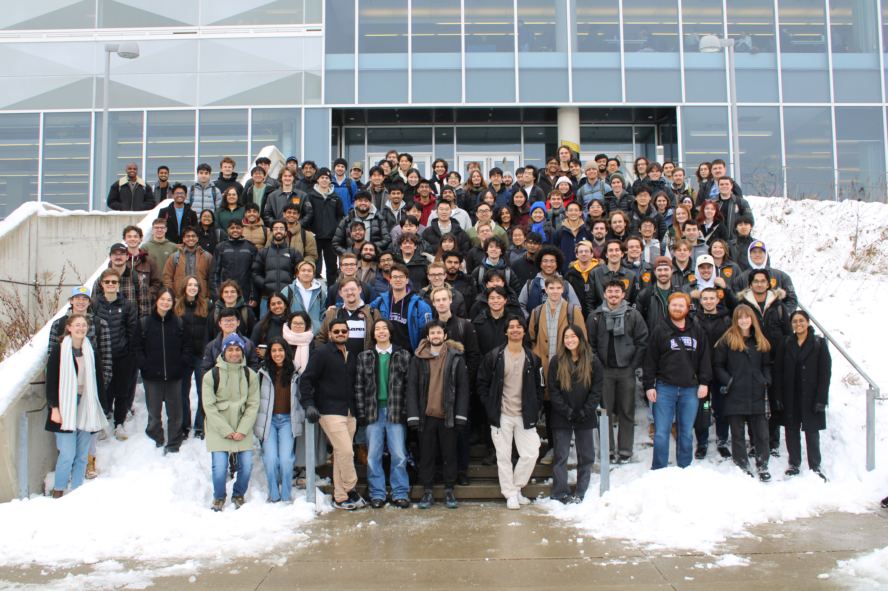

Check out the carousel below for a little trip down memory lane. A bit front heavy on the Stream 8 stuff, but it evens out a bit later.

Data Presented
The program has eight academic terms and six
co-op terms. This profile presents data taken
from a survey administered to the class between
June and August of 2026.
Acknowledgements
This profile was heavily inspired by previous profiles, especially the Tron 2022 Class Profile. If you've seen that, this layout will look pretty familiar. I even took this part from it.
I would like to thank Jared for getting a good head start on the google form, and being generous enough to let me use it to build off of.
I'd also like to thank Caleb, Zara, and Phoebe for helping me get the word out about the initial google form, as well as the group of people that kept pinging me on discord asking when I'd be releasing it. Now. I'm releasing it now.
To the class: Thanks for spending 5 Years with me. It gets rocky sometimes, but we got through, and now we can all do IOP from memory.
To everyone else: Enjoy looking through our class profile! Hopefully it can offer you some insight into our lives, and the program as a whole.
Things to Note
I'm not really much of a web developer, nor do I regularly make surveys like this, so this took a
STUPID amount of time for me to do. If something is broken, whoopsie. Hit me up on discord and I might fix it.
If you are a student and you want to do something like this,
hit me up at wt2mccut@uwaterloo.ca and I'll give you the necessary google form and disgusting python file
I put together for this.
Despite what everyone I spoke to suggested, this was not a claude one-shot. I put all 120-something graphs together by hand.
Was that a good use of my time? Maybe not, but I'm reasonably proud of the results.
Also, this profile was created independently of the University of Waterloo or the Mechanical & Mechatronics Departement. The content in this profile does not represent the University in any way.
Learn about Mechatronics Engineering
Learn about Co-op
Enjoy going through the content!
Demographics
Explore information about the graduating class and its demographics.
School
View information about academic experiences throughout the program.
Co-op
Explore the class's co-op experiences and employment information.
Lifestyle & Relationships
Explore information about lifestyle and activities among the class.
Future Plans
See where the graduating class planned to go after completing the program.
Conclusions & Advice
We're so wise now. Come read how wise we are now.